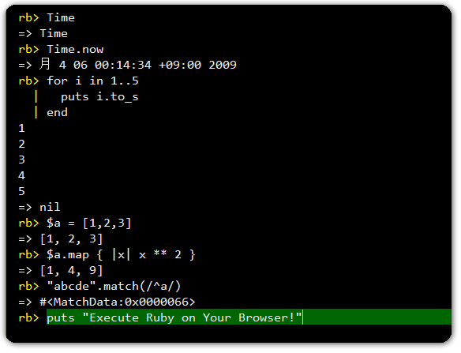

IRBWEB
Execute Ruby on Your Browser

Silverlight 2.0 Required
The Silverlight 2.0 runtime plug-in required. Click the following image.
Supported OS and Browsers
Windows XP SP2~ Internet Explorer 6.0+
Windows XP SP2~ Firefox 1.5+
Mac OS X 10.4.8~ (Intel base) Firefox 1.5+
Mac OS X 10.4.8~ (Intel base) Safari